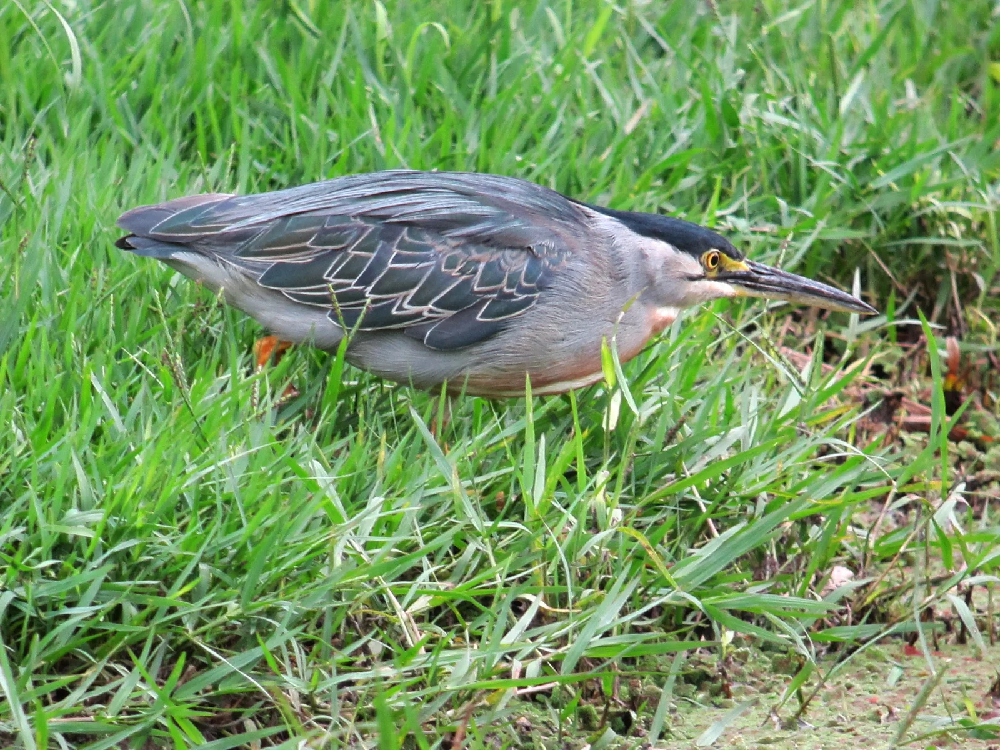

Back to the indexNO. 054 · Wetlands & Waterways / Ardeidae · Herons & Egrets
Striated Heron
绿鹭 · lǜ lù Butorides striataThe little old man on the tree roots, absolutely motionless
Small, short-necked, grey-green backed, orange-yellow legs. It loves to squat on a waterside root or stone, bunched up and utterly still, watching the water — from a distance it looks like a mossy rock, until it suddenly shoots forward.
Gallery
One scientific illustration for shape and colour blocks, two field photographs for how it looks in real light. Click any image to enlarge.
Identification
- CrownCrown blackish-green with fine green plumes at the nape, usually laid flat against the back of the head.
- PlumageBack grey-green, sides of neck and breast grey, underparts grey-white with bold streaks, wings grey-green.
- LegsOrange-yellow to yellow-green, short for the bird's size — a contrast with the black legs of the white egrets.
- ShapeThick-set and short-necked, usually hunched, standing low at the water's edge or on mangrove roots.
Behaviour
An ambush predator, motionless for long stretches, then extending the neck to take small fish, prawns and frogs. It sometimes drops insects or feathers on the water as bait — one of the few birds known to use tools. A resident in South China, in mangroves, streams and sheltered watersides.
Voice
A loud 'kyow' or 'skeeow' when flushed, short and sharp, usually heard at the instant of take-off.
Where to find it in Zhuhai
- Qi'ao Island mangroves
- Qianshan River banks
- Hengqin wetland channels
- Xiangshan Lake Park waterfront